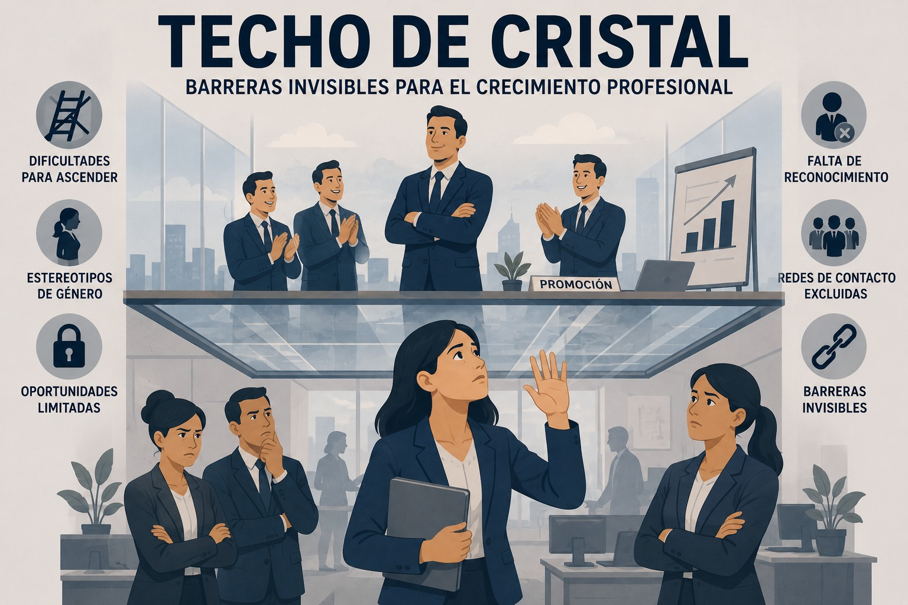

Riesgo psicosocial
Techo de cristal
Barreras invisibles que limitan el avance profesional de mujeres y otros grupos subrepresentados hacia posiciones de liderazgo.

Definición y concepto
Se denomina techo porque representa una cota o límite superior, y de cristal porque constituye una barrera invisible que, aunque no se percibe de manera explícita, limita el avance profesional (Gil Yepes, 2023).
A partir de esta metáfora, el techo de cristal se entiende como las barreras invisibles que impiden que ciertos grupos, especialmente las mujeres, lleguen a posiciones de liderazgo o accedan a oportunidades de crecimiento en el ámbito laboral. Aunque estas barreras no son explícitas ni legales, actúan como un límite que restringe el desarrollo profesional debido a prejuicios y estereotipos (Ciencias del Derecho, 2024).
Este concepto comenzó a ganar relevancia en los años ochenta del siglo XX, durante la segunda ola del feminismo, y continúa siendo una realidad presente en diferentes contextos organizacionales. Se trata de barreras invisibles sustentadas en sesgos que dificultan o impiden a las mujeres acceder a cargos de liderazgo (El Orden Mundial, s. f.).
En este contexto, la aparente igualdad de condiciones puede enmascarar disparidades significativas en las trayectorias profesionales dentro de las organizaciones (ifeel, 2022).
Por ello, la capacidad para desempeñar un cargo no debería estar determinada por condiciones biológicas o estereotipos asociados al género, sino por las competencias, conocimientos y habilidades de las personas. Al respecto, la política estadounidense Bella Abzug señaló que "la prueba para saber si puedes o no hacer un trabajo no debería ser la organización de tus cromosomas" (Gil Yepes, 2023).
Causas
- Expectativas sociales de género.
- Percepción de falta de capacidad.
- Cultura organizacional masculinizada.
- Brecha salarial de género.
- Falta de modelos a seguir y mentoras (OlarteMoure, 2024).
El sesgo como causa
Las causas que impiden a una mujer crecer profesionalmente están fundamentadas en el sesgo de género. El sesgo de género es el trato diferenciado a las personas en base a su sexo y está construido sobre prejuicios y estereotipos. Puede dividirse en cinco grupos, que se traducen en diferentes obstáculos para las mujeres en el trabajo (El Orden Mundial, s. f.):
- El primero es el sesgo de rendimiento que consiste en tener criterios diferentes para juzgar el trabajo de ambos sexos, infravalorando el realizado por las mujeres y sobrevalorando el de los hombres.
- El segundo sesgo es el de atribución, que critica de forma negativa el trabajo que realiza una mujer y la considera menos competente que los hombres. Por tanto, se descarta a las mujeres para ascender en el trabajo.
- El tercer sesgo es el de afinidad donde, este sesgo afecta a hombres y mujeres de forma negativa y se basa en la confianza social en los roles tradicionales con base en prejuicios y estereotipos.
- El cuarto sesgo es el de la maternidad en el cual, este sesgo hace creer que las mujeres se comprometen menos con la empresa por factores biológicos como el embarazo o sociales como la carga familiar, lo cual dificulta contratarlas o promoverlas.
- El quinto y último sesgo es el de aprecio donde, con este sesgo se considera positivo que los hombres sean confiados y asertivos, pero el mismo comportamiento en una mujer se considera desafiante y por tanto negativo. Esto se debe a que al hombre se asocian comportamientos dominantes, mientras que se espera simpatía y complacencia de las mujeres, una cualidad que no encaja con los estereotipos de un líder.
Consecuencias
Impacto individual y en la salud mental de los trabajadores
- Frustración y desmotivación: La percepción constante de barreras invisibles puede llevar a una disminución en la motivación y el compromiso laboral.
- Estrés crónico: La lucha continua contra obstáculos no reconocidos puede resultar en niveles elevados de estrés, ansiedad y agotamiento o burnout en el trabajo.
- Baja autoestima: La falta de reconocimiento y oportunidades de avance puede erosionar la confianza profesional.
- Síndrome del impostor: Muchos profesionales pueden desarrollar sentimientos de inadecuación, a pesar de sus logros y capacidades.
Consecuencias organizacionales
- Pérdida de talento: Las organizaciones se privan de profesionales valiosos debido a la falta de oportunidades de crecimiento, resultando en una fuga de talento hacia competidores más inclusivos.
- Consecuencias para la reputación corporativa: La percepción de inequidad puede dañar la imagen de la empresa, afectando su capacidad para atraer y retener talento diverso.
- Limita la innovación: La falta de diversidad en puestos de liderazgo puede resultar en una menor variedad de perspectivas, limitando la capacidad de innovación de la empresa.
- Clima laboral deteriorado: La percepción de injusticia puede afectar negativamente la moral y la cohesión de los equipos. Para apoyarte en este proceso, el equipo de psicólogos expertos de ifeel, ha creado esta encuesta de medición de clima laboral que puedes descargar de manera gratuita, y que te ayudará a implementar acciones prácticas para fomentar un clima laboral saludable.
Impacto económico
- Pérdidas en la economía: Según un informe del Banco Mundial, las economías pierden aproximadamente $160 billones en riqueza debido a las diferencias en ganancias entre hombres y mujeres. Esta cifra alarmante subraya el costo económico masivo de la desigualdad de género en el lugar de trabajo.
- Brecha salarial de género persistente: Al limitar el avance profesional de ciertos grupos, se perpetúa una brecha salarial que no solo afecta a los individuos, sino que también tiene implicaciones macroeconómicas significativas.
- Competitividad reducida: Las empresas que no logran aprovechar plenamente su diversidad de talento pueden encontrarse en desventaja en un mercado global cada vez más competitivo.
- Innovación y adaptabilidad limitadas: A nivel macroeconómico, la falta de diversidad en posiciones de liderazgo puede resultar en una menor capacidad de las industrias para innovar y adaptarse a los cambios del mercado (ifeel, 2022).
Prevención y recomendaciones
Programas de mentoría
- Mentoría cruzada: Fomentar relaciones de mentoría entre diferentes departamentos y niveles jerárquicos.
- Patrocinio ejecutivo: Asignar patrocinadores de alto nivel a talentos emergentes para abogar por su avance y visibilidad.
Políticas de diversidad e inclusión robustas
Desarrollar y aplicar políticas que promuevan activamente la diversidad en todos los niveles de la organización. Estas deben incluir:
- Objetivos de diversidad medibles: Establecer metas claras para la representación diversa en puestos de liderazgo.
- Procesos de contratación y promoción inclusivos: Implementar prácticas como paneles de entrevista diversos y evaluaciones de desempeño estandarizadas.
Capacitación en sesgos cognitivos
Educar a todos los empleados, especialmente a los líderes, sobre los sesgos cognitivos y cómo mitigarlos.
- Talleres interactivos: Ofrecer sesiones de formación regulares sobre identificación y mitigación de sesgos.
- Herramientas de toma de decisiones: Proporcionar marcos y listas de verificación para tomar decisiones más objetivas en contrataciones y promociones.
Flexibilidad laboral y apoyo a la conciliación
Implementar políticas que permitan un mejor equilibrio entre la vida laboral y personal.
- Opciones de trabajo flexibles: Ofrecer horarios flexibles, trabajo remoto y empleos compartidos.
- Políticas de licencia parental equitativas: Proporcionar licencias parentales generosas y accesibles para todos los géneros.
Transparencia salarial y equidad en la remuneración
Abordar proactivamente la brecha salarial de género y otras disparidades.
- Auditorías salariales regulares: Realizar revisiones periódicas para identificar y corregir disparidades salariales.
- Transparencia en las bandas salariales: Publicar rangos salariales para todos los puestos.
Desarrollo de liderazgo inclusivo
Fomentar habilidades de liderazgo que promuevan la inclusión y la equidad.
- Programas de desarrollo de liderazgo: Ofrecer formación específica en liderazgo inclusivo.
- Evaluación de desempeño basada en competencias inclusivas: Incluir métricas de inclusión en las evaluaciones de líderes.
Creación de redes de apoyo y comunidades de empleados
Facilitar la formación de grupos de afinidad y redes de empleados
- Grupos de recursos o apoyo para empleados: Apoyar la creación de grupos basados en identidades compartidas o intereses comunes.
- Eventos de networking inclusivos: Organizar oportunidades de networking que fomenten conexiones diversas.
Medición y rendición de cuentas
Establecer sistemas para monitorear el progreso y mantener la responsabilidad.
- Cuadros de mando de diversidad: Crear y compartir regularmente métricas de diversidad e inclusión.
- Vinculación de bonificaciones ejecutivas: Atar una parte de la compensación de los líderes al logro de objetivos de diversidad e inclusión (ifeel, 2022).
¿Qué es romper el techo de cristal?
Significa desafiar y superar esas barreras invisibles que limitan el crecimiento profesional de ciertos grupos. Este concepto implica que las personas afectadas logran, a través de su esfuerzo y perseverancia, alcanzar posiciones de liderazgo o acceder a oportunidades antes restringidas. Romper el techo de cristal no solo es importante a nivel personal, sino que también es fundamental para promover la igualdad de oportunidades en el ámbito laboral (Ciencias del Derecho, 2024).
Material de apoyo
Abrir recurso en bbc.com Mirar video en YouTube (2mkvHl0n3qw)Referencias bibliográficas
BBC Mundo. (2017, 29 de septiembre). Qué es el "techo de cristal" y qué situación laboral viven las mujeres en América Latina. https://www.bbc.com/mundo/media-41436954
Ciencias del Derecho. (2024, noviembre 20). ¿Qué significa el término techo de cristal y cómo afecta el ámbito laboral? https://cienciasdelderecho.com/que-significa-el-termino-techo-de-cristal/
El Orden Mundial. (s. f.). ¿Qué es el techo de cristal? https://elordenmundial.com/que-es-techo-cristal/
Gil Yepes, J. (2023, 23 de mayo). El techo de cristal. ¿Qué podemos hacer? Aldeas Infantiles SOS Colombia. https://www.aldeasinfantiles.org.co/noticias/noticias-2023/techo-de-cristal
ifeel. (2022, 7 de marzo). Techo de cristal: ¿qué es y cómo romperlo? https://ifeelonline.com/es/salud-laboral/techo-de-cristal/
OpenAI. (2026). Imagen conceptual sobre Techo de Cristal con subtítulo "Barreras invisibles para el crecimiento profesional" mostrando una división física en el ascenso corporativo por género [Imagen generada por IA]. ChatGPT. https://chatgpt.com
OlarteMoure. (2024, 8 de marzo). Infografía | Rompiendo el techo de cristal. https://olartemoure.com/rompiendo-el-techo-de-cristal/
Universidad del Valle. (2024, 22 de marzo). Techo de Cristal [Video]. YouTube. https://www.youtube.com/watch?v=2mkvHl0n3qw